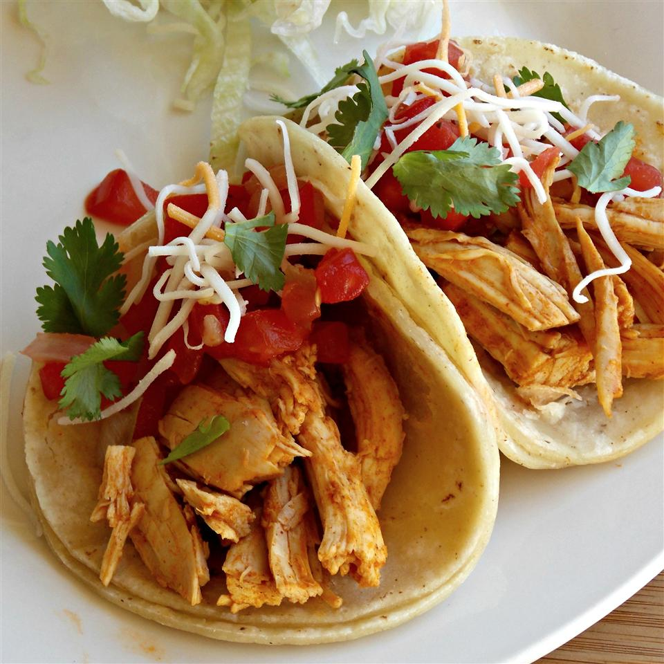

Roasted Chicken Soft Tacos

Prep
Preperation Time: 15 minutes
Cook Time: 30 minutes
Total: 25 minutes
Servings: approximately 11-12
Ingredients
- 1 teaspoon vegetable oil
- 1 rotisserie chicken, meat removed and chopped
- 1 tablespoon chili poweder
- 1 teaspoon cayenne pepper
- 12 flour tortillas
- salt and ground black pepper to taste
- 2 cups pico de gallo
- 1/2 cup shredded Mexican cheese blend
Directions
- Heat vegetable oil in a skillet over medium heat;
cook and stir chicken, chili powder, cayenne pepper,
salt, and black pepper together in the hot oil until
chicken is heated through, about 10 minutes.
- Spoon chicken mixture onto each tortilla and
top with pico de gallo and Mexican cheese blend.